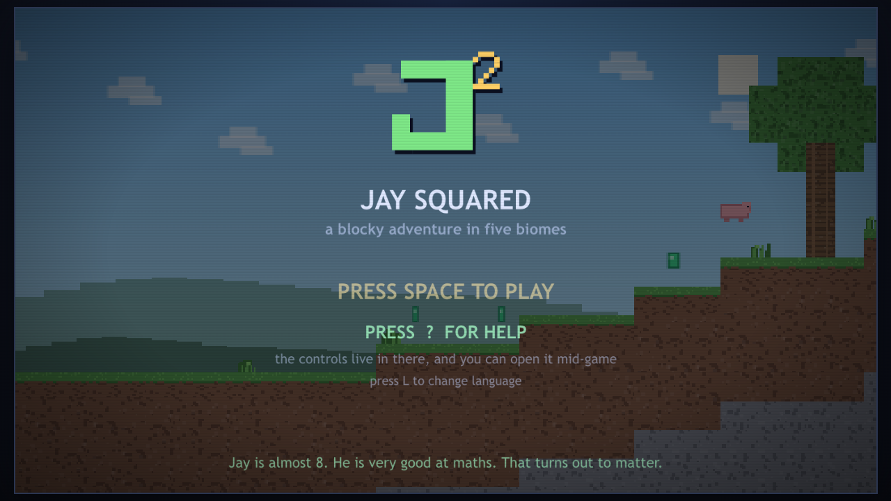
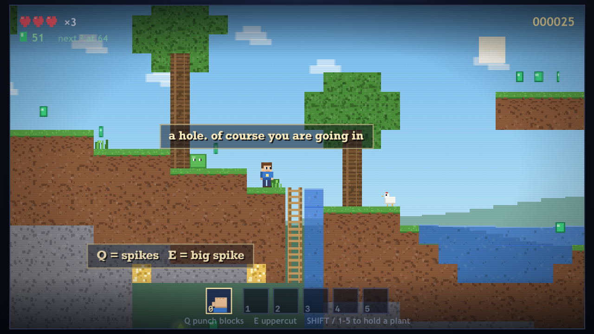

A 2D platformer in the spirit of the old Mario games, built out of
Minecraft-ish blocks, where being good at maths is the actual superpower.

Jay is almost 8. He is very good at maths. That turns out to matter.
The whole game is a single HTML file with no dependencies — it runs entirely in your browser, offline, with no install and no build step. Perfect squares pay out gems and rewards, purple runes ask sums scaled to the level you're on, and five biomes take you from the Emerald Plains to the Cobalt Castle.

| Key | Does |
|---|---|
| ← → | walk (A / D also work) |
| ↑ | jump • climb a ladder, vine or tree trunk |
| ↓ | crouch • climb down |
| SPACE | jump — press again in mid-air to go higher, up to five times |
| ↓ + SPACE | drop through wooden planks |
| Q | use power • with bare hands, hold to punch blocks apart |
| E | second power • uppercut |
| TAB + Q | squared — the Q power, twice over |
| 0 | bare hands |
| 1–5 | choose an inventory slot (number pad works too) |
| SHIFT | cycle through what you are carrying |
| P or ESC | pause |
| ? or H | help, at any time |